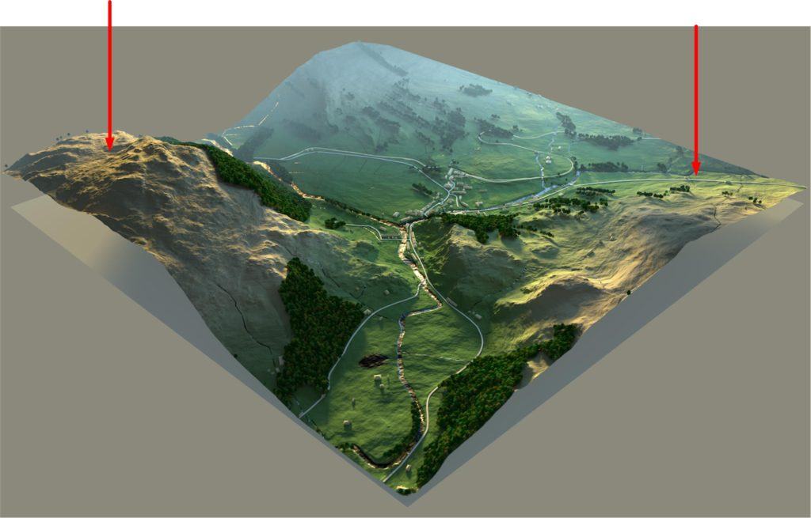
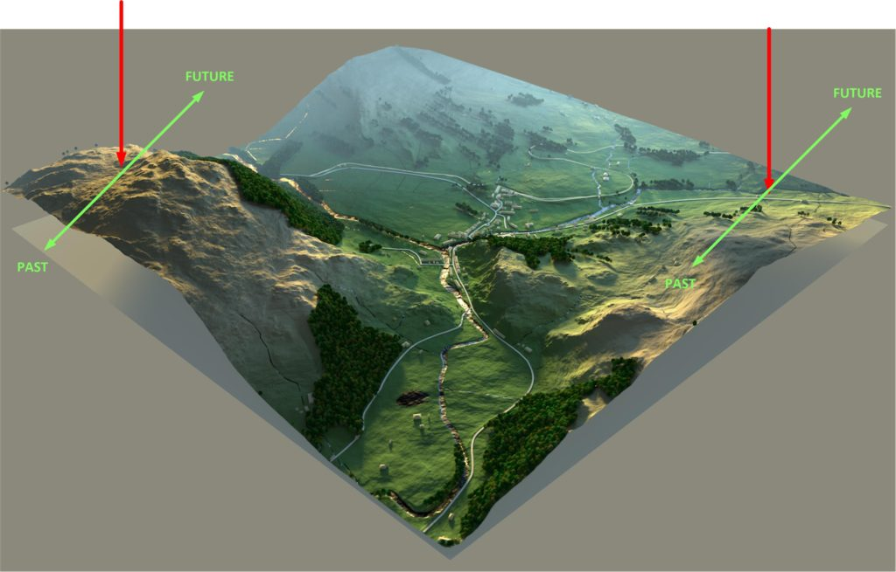
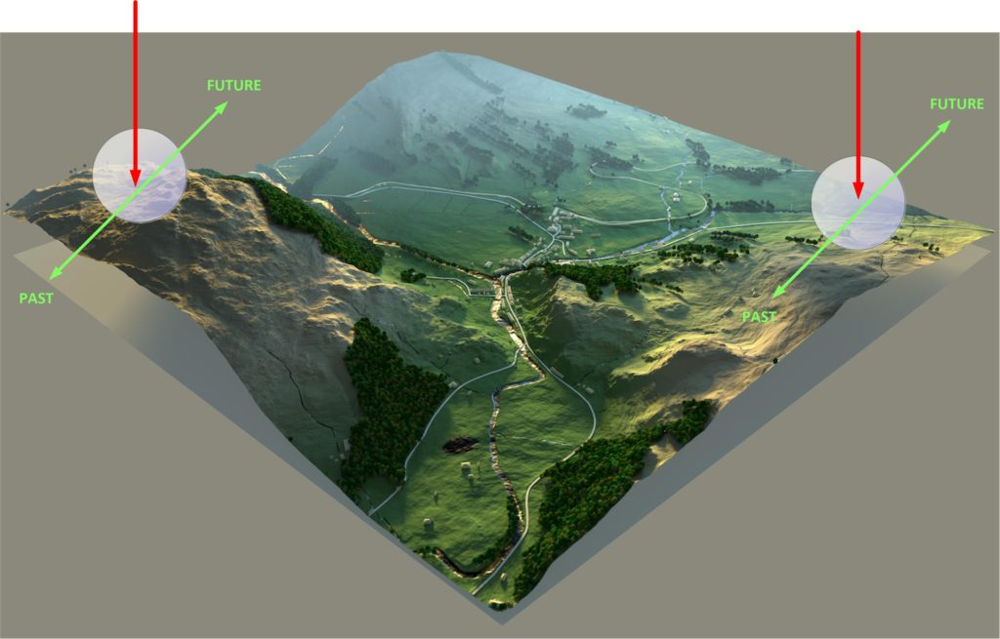
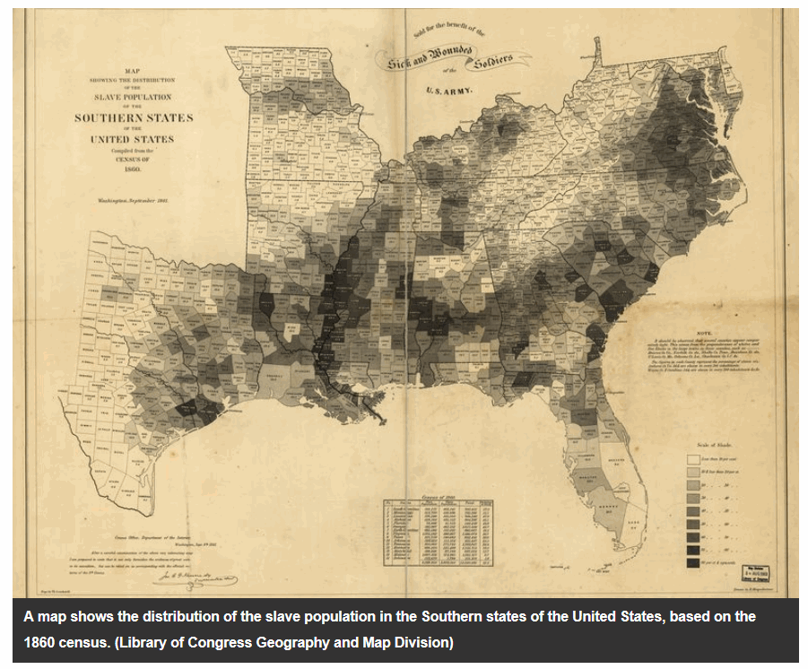
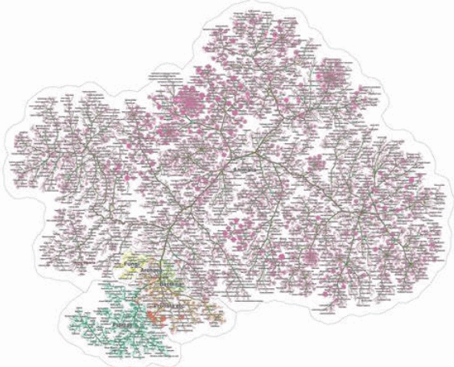
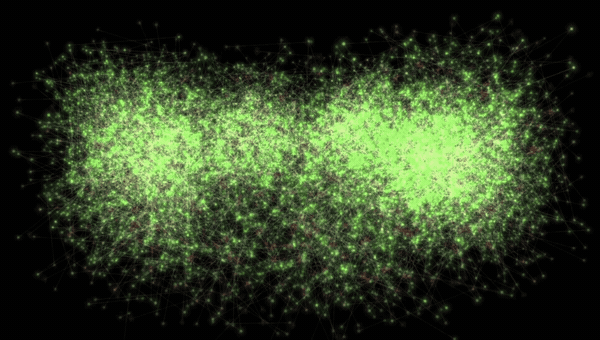
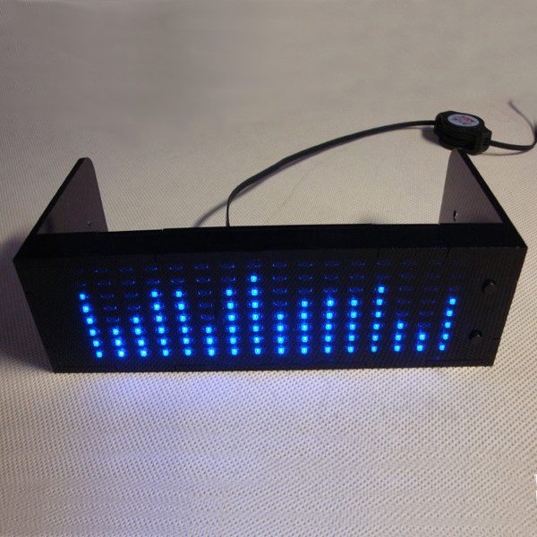
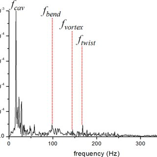
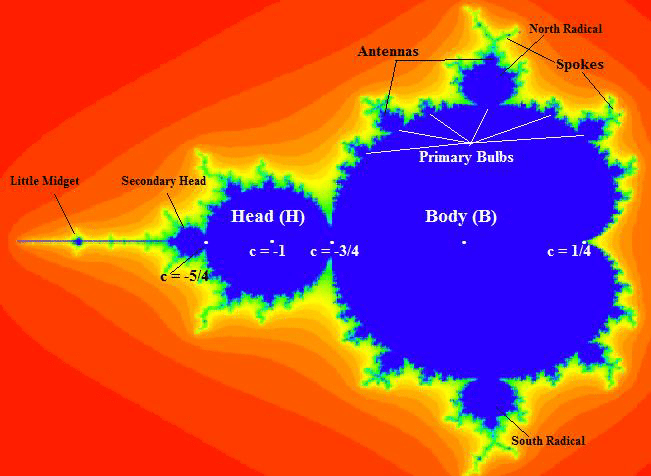

Here, in this post we are going to take a look at ways to convert the “frequencies of location” into a map with coordinates.
There is no right or wrong way to do this. In fact, there are many, many ways. Each with it’s own benefits and liabilities.
Consider this scenario
It’s easy enough to imagine a map with two sets of geographical coordinates. Right?

Now, add time. Where each coordinate can go “into the past”, stay in the present, or “move into the future”.

Now, add an entirely new set of criteria. It’s a big enormous set that describes variations in a world-line, for each coordinate. And the variations are nearly infinite, so it’s a very wide and open-ended coordinate. The only way that you can reasonably control all the many, many variations of a world-line variation is comparative. Using the current baseline, what is the delta changes to it?

When you break things down simply, it really isn’t that difficult.
The coordinate system that you use has really three major components to it. These are as described above. They are [1] geographic location, [2] time, and [3] world-line variation from egress coordinates.
Thus…
Coordinate = [1] location + [2] time + [3] world-line variation.
Converting frequencies into something that you can map
Unfortunately, the system that we have laid out describes the collection of frequencies of location with an isolation of the frequencies associated with the traveler. We need to convert that into a usable map.
We need to, don’t you know.
Well, it’s going to be pretty difficult to identify where you are in the enormous MWI. It’s darn near impossible to identify who you are relative to a near infinite number of world-lines that surround you. Not to mention all the variations and the changes associated with a destination coordinate.
It will look like a long string of numbers, in a long, thick book.
And because of this, it really isn’t very useful. You need to convert those numbers into a map that you can read, chart a course, and execute a travel algorithm.
Here we talk about this.
Why bother?
When I entered the fixed dimensional portal so many years back, the destination coordinates were in the form of long strings of numbers on bound print outs. It was the height of technology at the time, and the Commander made tweaks to the destination values upon reviewing my printed out handout.
Here is a bound stack of computer printout sheets nearly identical to what was used when I first entered the fixed dimensional portal…
In those days, most computers did not have a monitor or screen. Those few that did were pretty much a visual display that showed green colored text on a black background. Instead, the worker would sit behind a “terminal” and type. It in many ways resembled an electric typewriter, and had the added advantage of leaving a defined paper trail record of your keystrokes.
It looked something like this…
At that time, there was little option to do anything else. Visualization of large sets of data, or other systems for better and more understandable information retention and exchange was embryonic. We just used the systems available to us, as crude as they were at the time.
It’s not that the visualization of large data sets was unknown, it’s just that we didn’t have the tools necessary to organize the data.
The first instances of infographics as we know them today – as data made visual – dates back to the late 1700s with a chart of wheat prices and labor wages. The creator, William Playfair, might be considered the father of modern day infographics.
The key to infographics is that the brain processes images more readily than words: A picture really was worth a thousand words.
For instance, here is an infographic that discusses slavery in the Southern United States prior to the American Civil War;

In the example above, you can clearly see where Slavery was the most prevalent, and where it was scarce. You can also be able to deduce and extrapolate information from this graphic. That is the benefits of an infographic as opposed to large streams of numbers.
The advantage of visualization of large complex number sets
As computer technology became more and more sophisticated, a new branch of technology came into being. This was known as “information visualization”, and most reader have probably heard of it. Because “infographics” is a well understood off-shoot of this technology.
The importance of this should not be overlooked.
Relevant data sets would be highlighted, while other data sets could be ignored. As such, there are many different shapes and forms that they can be displayed into. The best one depends on the application.
For instance, here is a “tree” data visualization style.

And here is a “cluster” visualization style.

In regards to visualization of the enormous sets of data associated with world-line portal coordinates, it is important that the visualization be such that it is easy to understand, and equally easy to plot out destinations.
Visualizing frequencies
This technology has actually been around for a while. Anyone who has any of a zillion audio players on their computer can observe the ever changing music (frequencies of sound) depicted in eye-catching arrays for amusement purposes.

In these applications, we watch with amusement how the visual designs change with the changes in the music. Fun, huh?
But it gets old.
What we want is something similar, but quite different. We do not want to watch the frequencies of location change. We only want to see what the frequencies of location are. Then “freeze it” and then manipulate each one precisely to obtain our objectives (what ever they might be)…
- Geographic
- Time
- World-line
So what we need is a software program that will take all theses frequencies, broken down into a large number of very tiny separate frequencies, and display that in a pictorial format.
What we need is a special map display
What we want is a display of all the frequencies of location, compared to amplitude. Something along these lines…

But with a display of two other characteristics. So instead of just attenuation and frequency, we can also display (in color, and along the Y-axis) timbre, and pitch (to use audio terms) at any frozen moment in time.
A coordinate of location can be described by five characteristics: Wavelength, Amplitude, Time-Period, Frequency and Velocity.
Mandelbrot set
If you manage to plot out these data visualizations you might be surprised to discover that they start to appear as Mandelbrot sets.
The Mandelbrot set is the set of complex numbers c for which the function fc(z)=z²+c does not diverge when iterated from z=0, i.e., for which the sequence fc(0), fc(fc(0)), etc., remains bounded in absolute value. Its definition is credited to Adrien Douady who named it in tribute to the mathematician Benoit Mandelbrot. The set is connected to a Julia set, and related Julia sets produce similarly complex fractal shapes. -Wikipedia
Without getting to involved in the mathematics involved, any set of coordinates (which are the gravitational frequencies measured at the portal) can be reduced to equations. These are equations of location, and can be simplified to involve complex numbers.
- Why are frequencies represented as complex numbers?
- Soft question – “Where” exactly are complex numbers used …
- Complex Numbers, Phasors And Phase Shift
- Complex Sinusoids | Mathematics of the DFT
- What does the complex eigen-frequency imply?
- Representation of Waves via Complex Numbers
Now, the purpose of this conversion is to help visualize the components of the various frequencies so that changes and alterations can be made. Once these groupings are identified, then they can be altered so that the actual data is used when defining coordinate changes.
It works something like this…

So, in short, we can use mathematics and convert the frequencies of location into another form using complex numbers. Then we can graph the result. It will appear as a Mandelbrot set.
Through a series of experiments, we should be able to identify which characteristics of the Mandelbrot set has the greatest relevance for us, and then modify the destination coordinates appropriately.
But…
But there is more…
Fractals
If you study the Mandelbrot set you might be able to identify fractals with “self similarity”. These little mathematical nuances can help you determine the relative stability of a world-line.
Stability? What are you talking about?
I am talking about the anchoring of world-lines, and how world-lines tend to cluster together. Our consciousness tend to cycle through world-lines rather rapidly. So the moment you enter a new world-line, you are off on the way to other ones.
It’s called “time”, don’t you know.
Well, if we want a world-line, say where the most popular food is pineapple on pizza (why? Why Lord, why?) and when we get there, we suddenly discover after a few seconds that no one eats pineapple on pizza. And so we think, “WTF? What happened?”
What happened was that we arrived at our destination world-line, but it was not stable.
So we want stability, and thus we want to find forms and shapes within the Mandelbrot set that are prone for fractal behavior.
In mathematics, a fractal is a self-similar subset of Euclidean space whose fractal dimension strictly exceeds its topological dimension. Fractals appear the same at different levels, as illustrated in successive magnifications of the Mandelbrot set. Fractals exhibit similar patterns at increasingly small scales called self similarity, also known as expanding symmetry or unfolding symmetry; if this replication is exactly the same at every scale, as in the Menger sponge, it is called affine self-similar. Fractal geometry lies within the mathematical branch of measure theory. -Wikipedia
To find specific values to manipulate during the visualization of the data set, you will find that other mathematical manipulations might become useful. Such is the case with fractals.
Conclusion
By converting the frequencies of location into Mandelbrot sets, we can create a map that we can use to plot our travel through the MWI. This is true whether it is geographical, involve time-travel or exploring the near-infinite variations of different world-lines.
Happy exploring.